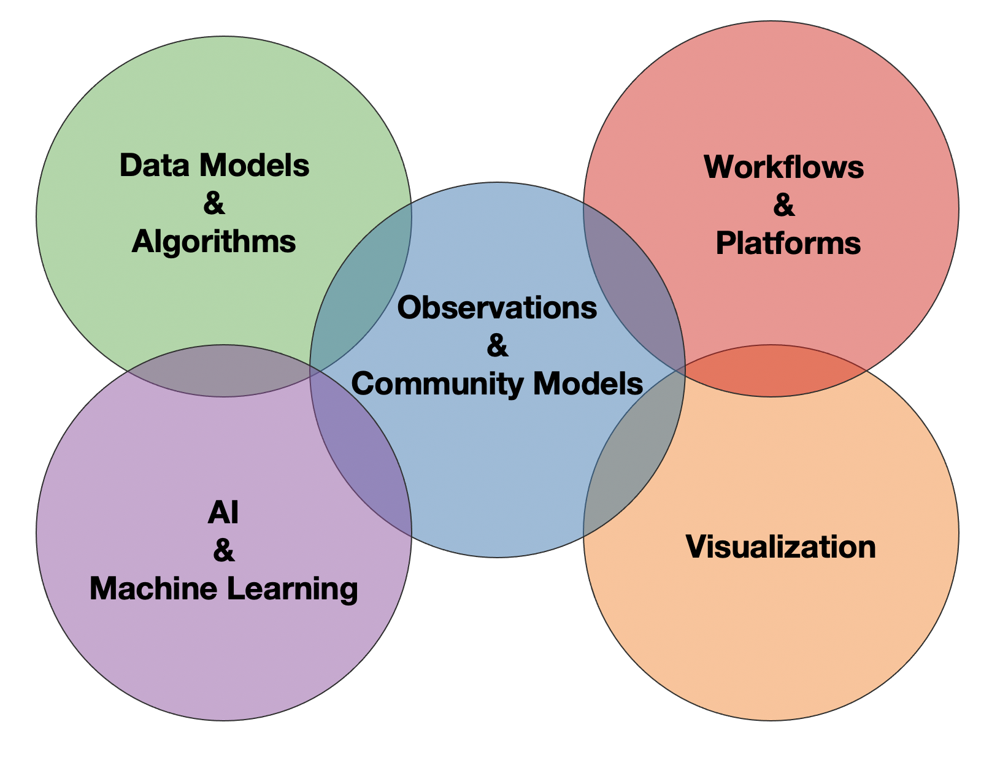

About Us¶
Mission Statement¶
The ESDS initiative aims to build an inclusive sociotechnical network to promote effective synthesis and interpretation of data relevant to solving problems in Earth system science and supporting decisions within stakeholder communities.
Our Vision¶
An interactive numerical laboratory for Earth system science
Seamless integration of routine model evaluation and cutting-edge science
Community-oriented, community-developed analysis frameworks
Entrain stakeholders in co-design processes

Near-term Goals¶
Facilitate a process for developing the next generation CESM diagnostic frameworks
Improve coordination across NCAR and the community on analysis workflows
Explore science at scale on Cloud platforms
Develop and curate educational materials